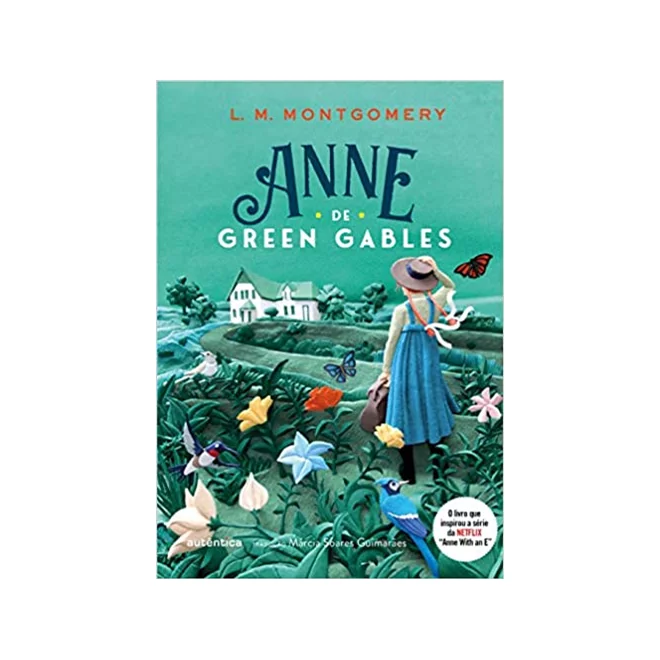
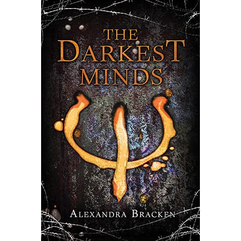

Twelve-year-old Percy Jackson is on the most dangerous quest of his life. With the help of a satyr and a daughter of Athena, Percy must journey across the United States to catch a thief who has stolen the original weapon of mass destruction — Zeus’ master bolt. Along the way, he must face a host of mythological enemies determined to stop him. Most of all, he must come to terms with a father he has never known, and an Oracle that has warned him of betrayal by a friend.
Throne of Glass
After serving out a year of hard labor in the salt mines of Endovier for her crimes, 18-year-old assassin Celaena Sardothien is dragged before the Crown Prince. Prince Dorian offers her her freedom on one condition: she must act as his champion in a competition to find a new royal assassin.
Her opponents are men-thieves and assassins and warriors from across the empire, each sponsored by a member of the king’s council. If she beats her opponents in a series of eliminations, she’ll serve the kingdom for four years and then be granted her freedom. Celaena finds her training sessions with the captain of the guard, Westfall, challenging and exhilarating. But she’s bored stiff by court life. Things get a little more interesting when the prince starts to show interest in her … but it’s the gruff Captain Westfall who seems to understand her best.
Then one of the other contestants turns up dead … quickly followed by another. Can Celaena figure out who the killer is before she becomes a victim? As the young assassin investigates, her search leads her to discover a greater destiny than she could possibly have imagined.
Hunger Games
The story is set in the future, after the destruction of North America. The country is called Panem. There are twelve poor districts governed by the rich Capitol. There was a thirteenth district in the past but the Capitol destroyed them because they rebelled.
The Capitol organises the Hunger Games every year to punish the districts. One boy and one girl aged 12 to 18 fight in a battle. Only one person will live. The chosen teenagers are called “tributes”. The whole country must watch the games on television.
The story is about Katniss Everdeen, a sixteen-year-old girl. Her father died and now she has to kill animals for her family to eat. Her younger sister, Prim, is chosen to be a “tribute”, but Katniss volunteers to go instead. The other “tribute” from District 12 is a boy named Peeta.
Harry Potter
Ten-year-old Harry Potter is an orphan who lives in the fictional London suburb of Little Whinging, Surrey, with the Dursleys: his uncaring Aunt Petunia, loathsome Uncle Vernon, and spoiled cousin Dudley. The Dursleys barely tolerate Harry, and Dudley bullies him. One day Harry is astonished to receive a letter addressed to him in the cupboard under the stairs (where he sleeps). Before he can open the letter, however, Uncle Vernon takes it. Letters for Harry subsequently arrive each day, in increasing numbers, but Uncle Vernon tears them all up, and finally, in an attempt to escape the missives, the Dursleys go to a miserable shack on a small island. On Harry’s 11th birthday, a giant named Hagrid arrives and reveals that Harry is a wizard and that he has been accepted at the Hogwarts School of Witchcraft and Wizardry. He also sheds light on Harry’s past, informing the boy that his parents, a wizard and a witch, were killed by the evil wizard Voldemort and that Harry acquired the lightning-bolt scar on his forehead during the fatal confrontation.
Anne of Gren Gables

Anne of Green Gables, children’s novel by Canadian author Lucy Maud Montgomery, published in 1908. The work, a sentimental but charming coming-of-age story about a spirited and unconventional orphan girl who finds a home with elderly siblings, became a classic of children’s literature and led to several sequels.
Matthew Cuthbert and his sister, Marilla, live in Avonlea on Canada’s Prince Edward Island. Needing help on their farm, Green Gables, they apply to adopt a boy from an orphanage. By mistake, however, a red-haired, freckle-faced 11-year-old girl named Anne Shirley is sent to the siblings. While Matthew instantly takes to Anne, Marilla is unsure about keeping her. However, the cheerful and highly imaginative Anne gradually transforms the joyless lives of shy Matthew and prim Marilla, and they come to view her as a daughter.
Darkest Minds

Innocence is a celebrated quality in children that society oftentimes glorifies. In Alexandra Bracken’s book “The Darkest Minds,” she questions whether society would still covet children if that innocence was taken away and replaced with something sinister. In main character Ruby Daly’s experience, when deadly powers are put in the hands of children, innocence can disappear as a result of deeply-rooted fear.
New York Times best-seller “The Darkest Minds” takes place in a dystopian future America that’s fallen into chaos after a deadly disease kills a majority of the country’s children. As the surviving children develop special abilities, the government begins to hunt them and place them in camps.